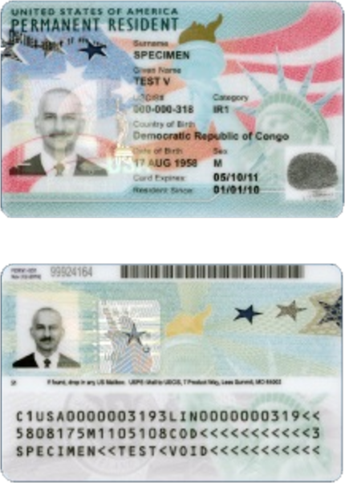

Rights and obligations of a green card holder: what a US permanent resident should know
A green card (Permanent Resident Card) holder is a US lawful permanent resident (LPR). This article explains the rights and obligations of HOLDING the card, not of getting it: taxes, reporting an address change, travel abroad and maintaining status, and the path to citizenship. Based only on verified official information; this is not legal advice. Fees, timelines and rules change — always check uscis.gov.

A green card holder is a person with the legal right to live and work permanently in the United States; the formal term is 'lawful permanent resident' (LPR). The card's official name is the Permanent Resident Card, Form I-551. The ways to obtain the card (for example, the DV lottery or through family) are covered in a separate article; this article is about the rights and obligations of a resident who already holds the card. The information below relies only on official sources and gives no legal advice (Source: USCIS — Rights and Responsibilities of a Green Card Holder; Wikipedia — Green card).
The card and its validity
A standard green card is valid for 10 years and is renewed when it expires using Form I-90; renewal does not change your status — you remain a resident, only the card document is renewed. In some cases (for example, certain marriage or EB-5 investor cases) a 2-year conditional card is issued first. It cannot be 'renewed': to remove the conditions you usually file Form I-751 (marriage) or Form I-829 (investor), generally in the 90 days before it expires; once approved, a 10-year card is issued (Source: USCIS — Form I-90; Wikipedia — Green card).
Rights
According to USCIS, a permanent resident has these core rights: to live permanently in the United States as long as you do not commit acts that would make you removable under immigration law; to work at any legal work of your qualification and choosing (some jobs, such as certain federal and security roles, are open only to citizens); and to be protected by all laws of the United States, your state of residence and local jurisdictions. A resident may also own property, may petition for certain close relatives (spouse, unmarried children), and may be eligible for some benefits (Source: USCIS — Rights and Responsibilities of a Green Card Holder).

Obligations
USCIS also lists a permanent resident's obligations: to obey the laws of the United States and localities; to file income tax returns and report income to the Internal Revenue Service (IRS) and state tax authorities — residents are taxed on worldwide income just like citizens; for males aged 18–25, to register with the Selective Service; and to maintain the card and, for those 18 and older, to carry it. One important duty is to report a change of address to USCIS within 10 days using Form AR-11 (this applies to both permanent and conditional residents, and even to a temporary move) (Source: USCIS — Rights and Responsibilities of a Green Card Holder; USCIS — Change of Address).
Maintaining status and travel abroad
A green card is not a visa for living abroad indefinitely — permanent residence must be kept in the United States. For short trips (under 6 months) the card alone is generally enough. But an absence of more than 6 months (180 days) means that on return you are treated as 'seeking admission': border officers (CBP) may question your residence, and it also breaks the 'continuous residence' needed for naturalization. An absence of about one year or more may be treated as abandonment of residence, and the card may be regarded as invalid for re-entry (Source: USCIS — Maintaining Permanent Residence).
USCIS lists ways you can lose or abandon status: moving to another country intending to live there permanently; remaining outside the United States for an extended period; or declaring yourself a 'nonimmigrant' on your tax returns. Before a long trip you can obtain a re-entry permit — Form I-131; it is valid for 2 years from issuance and helps show the absence was intended as temporary, but it is only a travel document and does not preserve 'continuous residence' for citizenship. If a person is stuck abroad for more than a year, or beyond the permit's validity, through circumstances beyond their control, they may apply at a consulate for a Returning Resident (SB-1) visa (Source: USCIS — Maintaining Permanent Residence; U.S. Department of State — Returning Resident Visas).
Losing status
Permanent resident status can be lost in several ways: abandonment as described above (long absence or intent to live abroad); a removal order by an immigration court for certain crimes or immigration violations; rescission within the first 5 years if it is found the eligibility requirements were not actually met; and fraud or misrepresentation. These matters carry serious legal consequences, and it is advisable to consult a qualified immigration attorney (Source: USCIS — Maintaining Permanent Residence; Wikipedia — Green card).
The path to citizenship
Most residents become eligible for citizenship (naturalization) generally after 5 years as a permanent resident; or after 3 years if married to and living with a US citizen. This requires continuous residence during the relevant period and a certain amount of physical presence (at least 30 months on the 5-year path, 18 months on the 3-year path). The application — Form N-400 — may be filed 90 days before the continuous-residence requirement is complete. The naturalization process is covered in detail in a separate article (Source: USCIS — Form N-400; USCIS — Naturalization).
Voting — an important warning
Green card holders cannot vote in federal, state or local elections and should not register to vote. Registering or voting unlawfully can lead to removal and can bar the path to citizenship. This rule must be taken seriously (Source: USCIS — Rights and Responsibilities of a Green Card Holder; Wikipedia — Green card).
Why this matters
Knowing a green card holder's rights and obligations helps diaspora families avoid accidentally losing their status, meet their tax and address duties, and plan properly toward citizenship. This article relies only on official sources and gives no legal advice. Fees, timelines and exact rules change — for the most accurate information always turn to USCIS (uscis.gov) or consult a qualified immigration attorney.